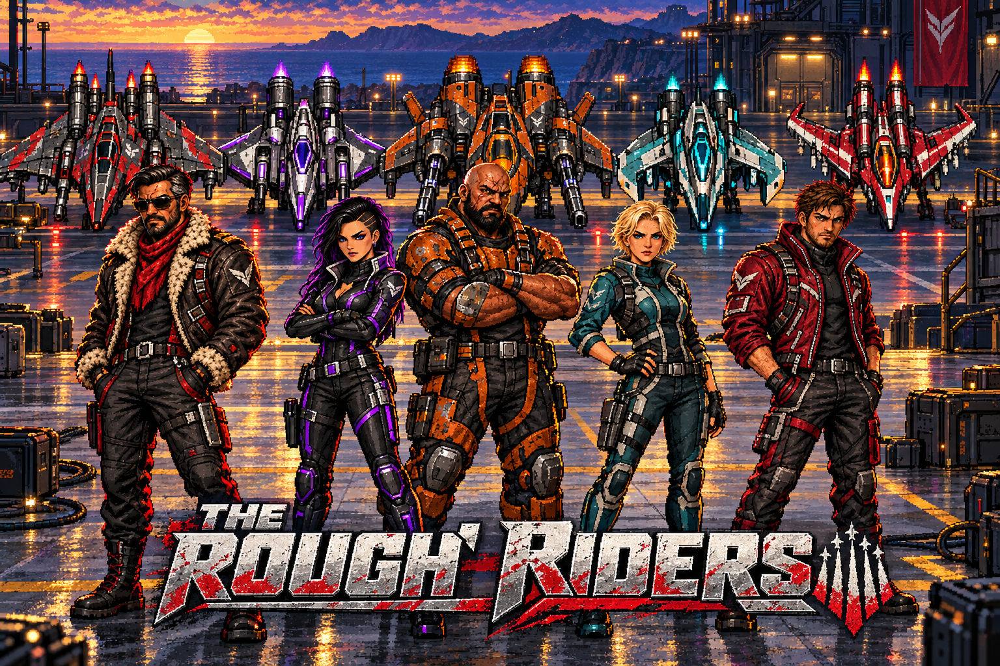

FIVE PILOTS. FIVE DISTINCT THREATS.
Know who you’re
flying against.
Their identities, flight patterns, tells and attacks — with video from the actual game.
Furious previews · Native game renderer and audio · Individually staged move demonstrations
Open pilot files
01 / PILOT FILES
The five riders
Choose a pilot. Jump straight to a move below the video.
CURRENT BUILD / FURIOUS
These are isolated demonstrations: native attack controllers run at normal speed in the real game. Other pilots’ automatic attacks and allies are held back for clarity. The observer uses GOD mode. Reveal and interception events are deliberately triggered where labelled.
How the aircraft moves
02 / SQUAD PLAY
Five ships, one encounter.
The shared flight language and the attacks they perform together.
COORDINATED MISSILE TURN
Lock, volley, scatter, return.
All living pilots assemble and place Retina locks on their targets. Each launches two physical missiles. The crew then splits toward north/south edges and returns on continuous flight paths.
Missiles can be shot down. Their homing phase commits near the target or after 0.9 seconds; the lock warning belongs on the victim.
Current-build finding: Star, Bowling, H and X calls all use the same staggered volley layout. The bowling formation in the new introduction is distinct and already works.
Shared firing pressure
The current tuning gives one background gun turn at a time and suppresses those shots during heavy specials. Furious can admit two special controllers, with additional interlocks preventing some heavy combinations. The resulting pressure is deliberately shared rather than five independent streams.
What can you destroy?
Physical homing missiles, Kaia’s rollers and the defined energy objects are destructible. Rook’s ordinary chaingun slugs are not. Do not treat every bright projectile as a shootable missile.
Their stolen equipment
Personal supply boxes can arm the next selection. Destroying one delays that pilot’s special. The isolated previews begin directly at move selection so every attack is easy to inspect.
Decker’s counterplay
The full crew encounter also has Decker’s supply-box shield event: opening the box casts a temporary central divider that reflects ordnance. This support event is suppressed in the individual previews so it does not obscure their patterns.
03 / NEXT DESIGN DECISIONS
Keep the identities. Resolve the gaps.
These are findings and suggested directions, not changes to the game in this pass.
Give Rook three real choices
Keep the dual chaingun, restore a distinct warned charge dash, and decide whether the physical hook belongs in his final move set. Today all three selections collapse into the chaingun.
Make the formation names mean different shapes
Use actual Star, Bowling, H and X arrangements with separate travel lanes and readable missile timing. Today they share one layout.
Lock Kaia’s final weapon identity
Her live teal roller gatling is distinct. The earlier slower five-way wind spread is not her current attack. Choose whether to retain the roller burst or give her a separate fan turn.
Finish Nyx’s shadow language
Cloak, reveal and retaliation are present. The shared energy throttle reduces her intended three-way releases to one charge per pulse, and the current effect palette still leans cyan. Dark-purple shadow energy would better match her hull.